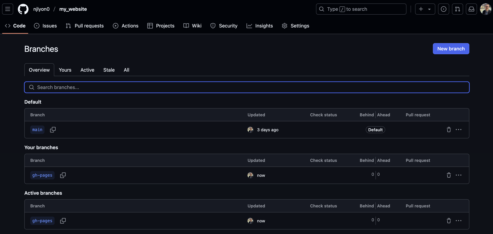
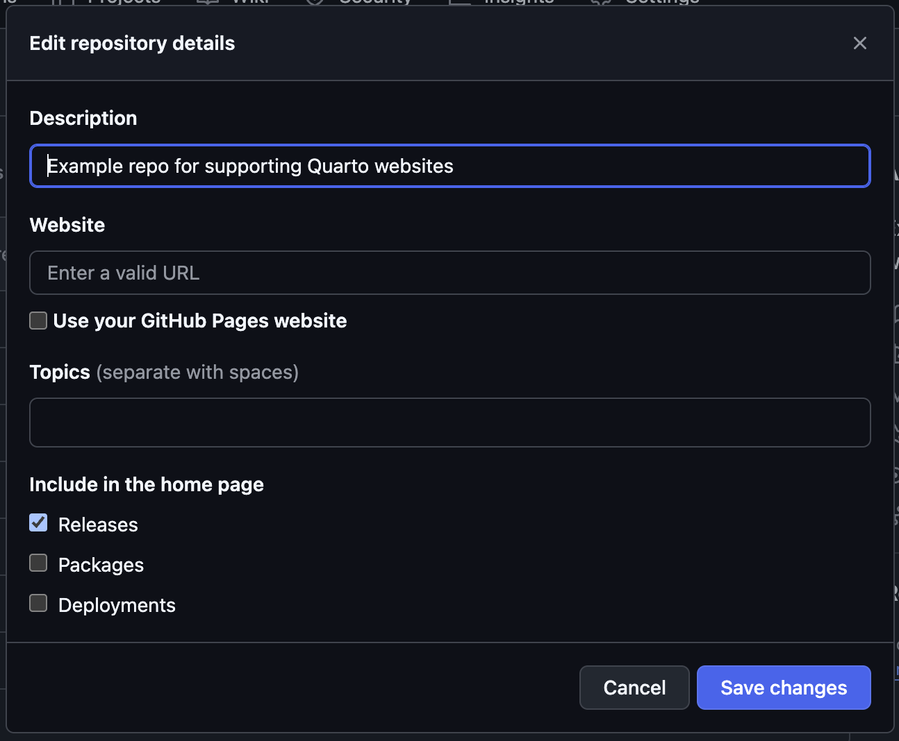

mkdir .github
mkdir .github/workflows
touch .github/workflows/publish.yml - 1
-
mkdiris CLI-speak for ‘make this folder’


By the end of this module, you will be able to:
While you created the structure and content of a website in the prior workshop module, you will need to take some additional steps in order to get the ‘actual’ website to exist. This process of translating a Quarto project into a living website is known as “deploying” that website. There are many options for where a website can be deployed and hosted but for the purposes of this workshop, we’ll be focusing on deploying via GitHub Pages.
We’re focusing on deploying via GitHub Pages because:
Once you’ve chosen to deploy via GitHub Pages, there are still several methods for successfully deploying! The instructions in this workshop use a GitHub feature called a “GitHub Action” (GHA) because this allows GitHub to automatically re-render and update the website whenever changes are made to any part of the website’s content.
This is a huge benefit for website updating because it reduces the need for manual “rendering” of website files locally and makes it simpler to maintain the website in the long term. Additionally, it also allows many pages in the website to be edited directly through GitHub (because rendering can be done online rather than needing to be done locally).
GitHub supports GHAs for a wide variety of automation purposes beyond website rendering (e.g., running tests on new code, checking compatibility with multiple operating systems, etc.) but the website rendering functionality is a great entry point into the world of GHAs if you do not already use them in your work on GitHub.
Another benefit of this approach is that GitHub Actions are free for public repositories! So you can host a personal, lab, or project website without needing to pay anything.
gh-pages BranchGitHub “branches” are typically short-lived development spaces that operate parallel to the ‘main’ branch of a repository. The main branch is either called main or master (for older repositories) and if you don’t think you are using branches, you are at least using main! Branches are not the focus of this workshop but if you’d like to learn more, check out the relevant module of the SciComp GitHub workshop.
For deploying a Quarto website though we’ll create a gh-pages branch that we will never have to work on directly! Once this branch exists, we’ll set up a GitHub action that renders your website into this branch and deploys from there. Doing this means you will rarely have to render your site on your machine and can instead trust the magic of GitHub Actions to transform your edits into a living website on its own.
To begin, go to your repository’s home page. Once there, click the “1 Branch” button. It is in the same row of buttons as the “Code” button. Note that you can see your current branch name (likely main) just to the left of that button.
In the resulting page, click the “New Branch” button. As with the “Code” button, it will be either blue or green depending on your GitHub settings.
A small pop-up window will appear with an empty text field for you to enter the name of your branch. Type exactly “gh-pages” and click “Create new branch”. The following steps will not work if you type something other than gh-pages (hyphen between “gh” and “pages). Also note that you can make the”gh-pages” branch in RStudio and push it up to this repository but making this branch through GitHub and pulling it to your computer is more straightforward.
Once you’ve done that, the pop-up window should close and you should find yourself back on the ‘branches’ page but there will now be two active branches: main (or master) and gh-pages!

You can now return to your repository’s landing page. You may see an orange circle or a check mark that is either blue or green next to the most recent commit message but we can safely ignore this for now.
Return to your local clone of this repository (i.e., the relevant RStudio project) and pull. This should change nothing but now your RStudio ‘knows’ that the repository has two branches. Note that if you instead make the new branch in RStudio you’d instead push that branch up to GitHub at this point.
Now that GitHub is properly set up, we need to define our desired GitHub Action. We do this by creating a new file locally in a particular file path then committing and pushing that file. Interestingly, the type of file that controls GHA settings is actually another YAML file!
So, in the Terminal pane of RStudio, run the following commands to create the needed file path and the GitHub Action’s YAML file with the right name. Note there is a slight difference depending on your operating system so be sure to use the right one!
mkdir .github
mkdir .github/workflows
touch .github/workflows/publish.yml mkdir is CLI-speak for ‘make this folder’
mkdir .github
mkdir .github/workflows
copy NUL .github/workflows/publish.ymlmkdir is CLI-speak for ‘make this folder’
One publish.yml exists on your computer, use the “Files” pane of RStudio to navigate to the file and open it. When you have it open, copy/paste all of the following into that file.
on:
workflow_dispatch:
push:
branches: main
name: Quarto Publish
jobs:
build-deploy:
runs-on: ubuntu-latest
permissions:
contents: write
steps:
- name: Check out repository
uses: actions/checkout@v3
- name: Set up Quarto
uses: quarto-dev/quarto-actions/setup@v2
- name: Render and Publish
uses: quarto-dev/quarto-actions/publish@v2
with:
target: gh-pages
env:
GITHUB_TOKEN: ${{ secrets.GITHUB_TOKEN }}publish.yml to GitHubOnce you have created publish.yml and put the necessary stuff into it, commit the new file and push it! Be sure that it is in the correct file path (i.e., “.github” “workflows” “publish.yml”).
After you push publish.yml, return to your repository landing page and you should see an orange circle next to that commit message.
If you click the “Actions” tab at the top of the repository’s landing page you can get more specific information about the GitHub Action’s progress.
At first, there will be a progress circle next to a “workflow run” that has the same name as the most recent commit. When that finishes it will be replaced by a check mark. Once this finishes, a new action called “pages build and deployment” will automatically start. Once that action is done, you should have an updated website!
If you don’t want to watch the actions complete from the “Actions” tab, you can check their status from the repository landing page; a circle means one of those actions is in progress and a checkmark indicates they are finished.
After the GitHub Action completes, your website is live but you’ll need to take an extra step to make that link directly accessible from the landing page of the repository. To start click the gear () icon next to “About” in the right sidebar of the repository.

In the resulting pop-up menu, check the box for “Use your GitHub Pages website” under the “Website” field. Feel free to customize the other fields however you’d like! When you’re done, click the “Save changes” button to close this menu and update your “About” sidebar.
You should now see the website in the “About” sidebar of the repository!
As with any other time when you work in your GitHub repository, you should now pull the latest changes to your local clone. This is unlikely to be the cause of a conflict because (A) no files have changed since you last pushed and (B) the only edits in the gh-pages branch should be whatever the GitHub Action does behind the scenes. However, it’s still good practice to pull regularly!
RStudio should return a message like the following:
Essentially this just means the your local gh-pages branch is now caught up with the website rendering / deployment that you set up GitHub to do on your behalf.
Let’s take a break while each of you works through the above tutorial on your own computers!
Once everyone has a working GitHub Action established we can move on to talking about how to add pages to the site and customize some formatting elements.